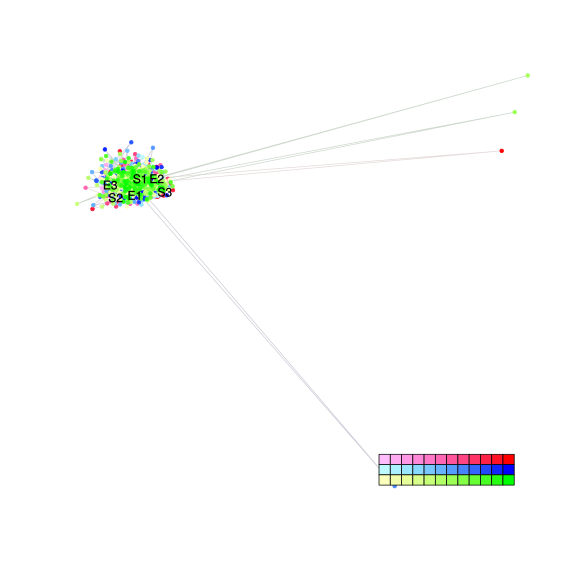
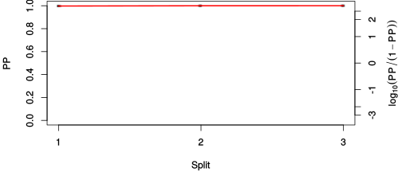
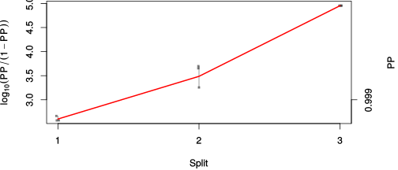

| chain # | burnin | subsample | Iterations (remaining) | command line | subdirectory | directory |
|---|---|---|---|---|---|---|
| 1 | 10000 | 1 | 90000 | /home/willemse/software/bali-phy-3.0-beta2/bin/bali-phy cat_E6_E7_AA_red3_v2_PerissoArtio_v1_sorted.fas -s 78543 -n PerissoArtio_c1 | PerissoArtio_c1-1 | /home/willemse/data/trees/BAli-Phy |
| 2 | 10000 | 1 | 90000 | /home/willemse/software/bali-phy-3.0-beta2/bin/bali-phy cat_E6_E7_AA_red3_v2_PerissoArtio_v1_sorted.fas -s 62347 -n PerissoArtio_c2 | PerissoArtio_c2-1 | /home/willemse/data/trees/BAli-Phy |
| 3 | 10000 | 1 | 90000 | /home/willemse/software/bali-phy-3.0-beta2/bin/bali-phy cat_E6_E7_AA_red3_v2_PerissoArtio_v1_sorted.fas -s 23567 -n PerissoArtio_c3 | PerissoArtio_c3-1 | /home/willemse/data/trees/BAli-Phy |
| P(data|M) = -3674.452 +- 0.321 | Complete sample: 7 topologies | 95% Bayesian credible interval: 1 topologies |
Phylogeny Distribution

| Partition support: Summary |
| Partition support graph: SVG |
{kind=link}
| 50% consensus | Newick (+PP) | SVG | |||||
| 66% consensus | Newick (+PP) | SVG | |||||
| 80% consensus | Newick (+PP) | SVG | |||||
| 90% consensus | Newick (+PP) | SVG | |||||
| 95% consensus | Newick (+PP) | SVG | |||||
| 99% consensus | Newick (+PP) | SVG | |||||
| 100% consensus | Newick (+PP) | SVG | |||||
| MAP | Newick (+PP) | SVG | |||||
| greedy | Newick (+PP) | SVG |
{kind=link}
{kind=link}
{kind=link}
{kind=link}
{kind=link}
{kind=link}
{kind=link}
{kind=link}
Alignment Distribution
Partition 1
| Diff | Min. %identity | # Sites | Constant | Informative | ||||
|---|---|---|---|---|---|---|---|---|
| Initial | FASTA | HTML | Diff | 3.4% | 324 | 1 (0.309%) | 52 (16%) | |
| Best (WPD) | FASTA | HTML | AU | 11.8% | 519 | 25 (4.82%) | 115 (22.2%) |
Mixing
{kind=link}
{kind=link}
| burnin (scalar) | ESS (scalar) | ESS (partition) | ASDSF | MSDSF | PSRF-CI80% | PSRF-RCF |
|---|---|---|---|---|---|---|
| 851 | 6469 | 71179.136 | 0.000 | 0.000 | 1.001 | 1.009 |
Projection of RF distances for the first 3 chains3D | Variation of split PPs across chains |
Scalar variables
| Statistic | Median | 95% BCI | ACT | ESS | burnin | PSRF-CI80% | PSRF-RCF |
|---|---|---|---|---|---|---|---|
| prior | -390.7 | (-454, -334.5) | 22.47 | 12016 | 262 | 1 | 0.9994 |
| prior_A1 | -368.7 | (-431.2, -313.5) | 18.3 | 14756 | 262 | 0.9995 | 1 |
| likelihood | -3644 | (-3673, -3615) | 15.64 | 17267 | 348 | 0.9997 | 0.9985 |
| logp | -4034 | (-4088, -3987) | 22.77 | 11857 | 282 | 1 | 0.9989 |
| Heat.beta | 1 | ||||||
| Scale1 | 3.505 | (1.495, 6.701) | 1.013 | 266631 | 140 | 0.9999 | 1 |
| S1.F.pi.A | 0.05449 | (0.04193, 0.06808) | 8.042 | 33573 | 331 | 0.9999 | 0.9978 |
| S1.F.pi.R | 0.08203 | (0.0656, 0.0996) | 8.009 | 33712 | 151 | 1 | 1.001 |
| S1.F.pi.N | 0.03146 | (0.02184, 0.04214) | 8.258 | 32696 | 376 | 1 | 1.003 |
| S1.F.pi.D | 0.04917 | (0.03691, 0.06281) | 8.337 | 32384 | 546 | 1 | 1.002 |
| S1.F.pi.C | 0.05628 | (0.0413, 0.07251) | 8.503 | 31754 | 633 | 0.9998 | 1.002 |
| S1.F.pi.Q | 0.02994 | (0.02113, 0.03986) | 8.028 | 33632 | 286 | 0.9999 | 0.9954 |
| S1.F.pi.E | 0.06764 | (0.05255, 0.08352) | 9.642 | 28003 | 508 | 1 | 1.009 |
| S1.F.pi.G | 0.07568 | (0.05853, 0.09409) | 8.217 | 32860 | 137 | 1.001 | 0.9981 |
| S1.F.pi.H | 0.02571 | (0.01715, 0.03562) | 8.002 | 33742 | 622 | 0.9999 | 1.006 |
| S1.F.pi.I | 0.03585 | (0.02602, 0.0467) | 8.521 | 31687 | 470 | 0.9997 | 0.9982 |
| S1.F.pi.L | 0.09695 | (0.07824, 0.1174) | 8.462 | 31909 | 361 | 0.9995 | 1.003 |
| S1.F.pi.K | 0.04873 | (0.03704, 0.06148) | 8.369 | 32261 | 425 | 1 | 0.9976 |
| S1.F.pi.M | 0.01282 | (0.007088, 0.01946) | 8.756 | 30836 | 851 | 0.9998 | 0.9987 |
| S1.F.pi.F | 0.03047 | (0.02039, 0.04177) | 8.078 | 33425 | 280 | 1 | 1.002 |
| S1.F.pi.P | 0.06805 | (0.05196, 0.08562) | 9.879 | 27329 | 333 | 1.001 | 1.008 |
| S1.F.pi.S | 0.06415 | (0.05098, 0.07874) | 8.78 | 30751 | 315 | 0.9996 | 1.004 |
| S1.F.pi.T | 0.04919 | (0.03697, 0.06213) | 7.889 | 34227 | 280 | 1 | 1.003 |
| S1.F.pi.W | 0.01936 | (0.01117, 0.02914) | 7.96 | 33918 | 744 | 1.001 | 1.006 |
| S1.F.pi.Y | 0.03637 | (0.02467, 0.04934) | 8.265 | 32666 | 383 | 1 | 1.001 |
| S1.F.pi.V | 0.05991 | (0.0463, 0.07447) | 8.457 | 31928 | 265 | 0.9996 | 1.002 |
| I1.RS07.meanIndelLengthMinus1 | 5.068 | (3.283, 7.319) | 9.821 | 27491 | 104 | 1 | 1 |
| I1.RS07.logLambda | -3.762 | (-4.145, -3.36) | 7.328 | 36844 | 130 | 1 | 1.003 |
| |A1| | 432 | (396, 466) | 41.74 | 6468 | 380 | 0.9857 | 0.9972 |
| #indels1 | 46 | (37, 55) | 17.58 | 15357 | 256 | 0.9167 | 1.001 |
| |indels1| | 285 | (224, 347) | 13.96 | 19339 | 196 | 0.9873 | 0.9982 |
| #substs1 | 580 | (548, 610) | 41.64 | 6484 | 350 | 0.9677 | 0.9984 |
| Scale1*|T| | 4.347 | (3.892, 4.825) | 5.26 | 51329 | 169 | 0.9998 | 1 |
| |A| | 432 | (396, 466) | 41.74 | 6468 | 380 | 0.9857 | 0.9972 |
| #indels | 46 | (37, 55) | 17.58 | 15357 | 256 | 0.9167 | 1.001 |
| |indels| | 285 | (224, 347) | 13.96 | 19339 | 196 | 0.9873 | 0.9982 |
| #substs | 580 | (548, 610) | 41.64 | 6484 | 350 | 0.9677 | 0.9984 |
| |T| | 1.241 | (0.5007, 2.256) | 1 | 270003 | 130 | 1 | 0.9997 |